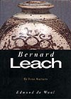

| Bernard Leach (St.
Ives Artists)
by Edmund De Waal
Bernard Leach is regarded as one of the great potters of the 20th
century. He spent eleven years in Japan, from 1909 to 1920, after
which he returned to England to set up the St. Ives pottery and
to spread the message of ceramics the Oriental way. His influence
through his writings and as mentor of many successful English potters
has earned him a reputation as pivotal reformer of Western ceramics.
Edmund De Waal's book Bernard Leach (St. Ives Potters) takes a refreshing
and critical look at Leach's life and accomplishments, offering
a healthy, at times dissenting view to the normal assumptions of
exactly what Leach contributed to 20th C pottery.
It
is little known that Leach seldom threw his own pots, but rather
had them made for him to decorate. He dismissed traditions, that
didn't fit into his concept of ceramics, such as those of French
stoneware potters or Italian Maiolica artists. He ignored ceramic
sculpture, proposing that art school traditions fostered a lack
of skill masked by arty conceit amongst students. He preached humility,
but was himself quite an autocratic character.
De Waal's book offers a somewhat different view from that propagated
by the Leach's followers. I would say that it was quite an objective
one and that this is a valuable book on Leach's lifes work. It is
dissenting at times but not overly critical and certainly not disrespectful
of the Old Master. It takes you through various stages in Leach's
life fairly objectively. Actually De Waal probably could have been
much more critical of some of Leach's idiosyncrasies. However many
people will not agree with some of the criticisms. One reader, posting
a review on the Net, described the book as "a bitter attack
on the man who was solely responsible for the renaissance of the
pottery movement in Britain at the early years of the century".
I cannot share this view at all. However, if you don't want to know
about criticisms of Leach's legacy, this book is not for you.
More Reviews
|